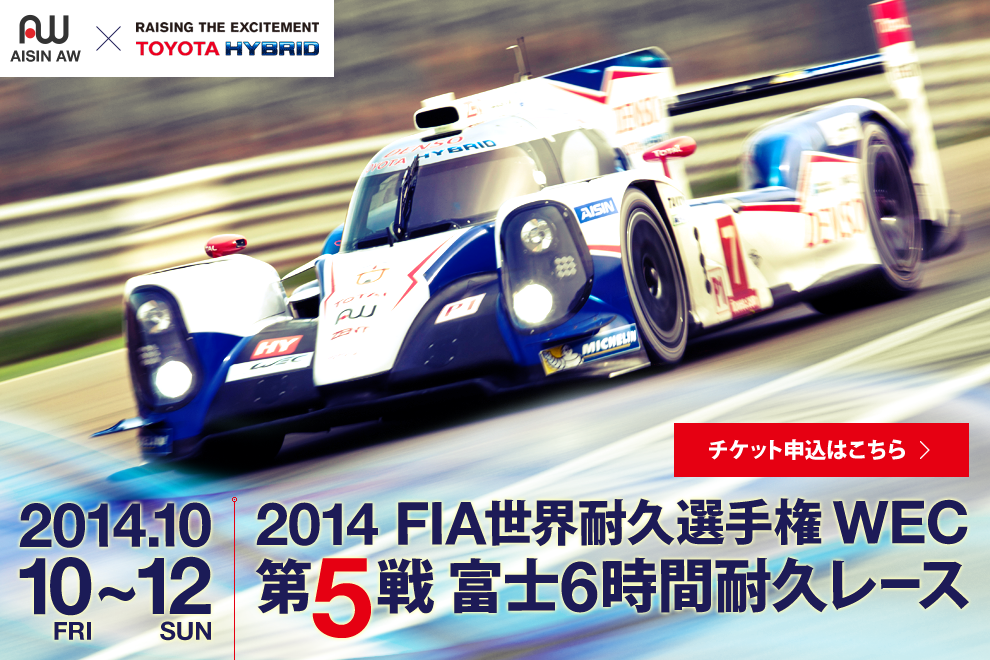
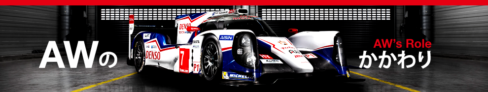
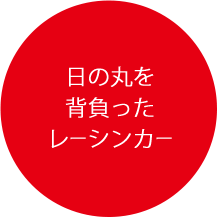
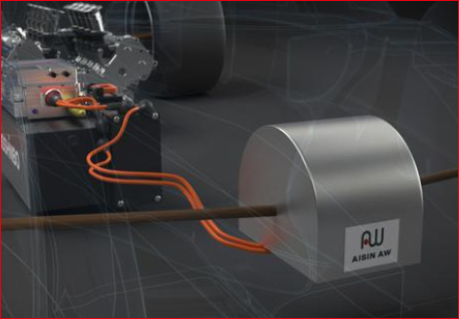
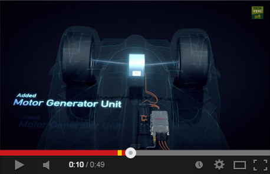
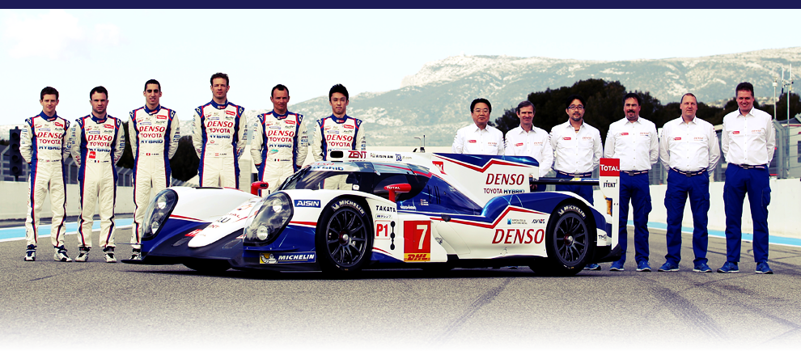

アイシン・エィ・ダブリュは、
トヨタ・レーシングチームのハイブリッドレーシングカー「TSO40 HYBRID」に搭載されている、
ハイブリッドモータシステム（前輪）を開発しています。

TS040 HYBRIDにAWのハイブリッド技術

今年トヨタ・レーシングは、昨年までのTS030 HYBRIDをベースに、ハイブリッドパワートレーン、シャシーともにまったく新しく設計された、新型車両TS040 HYBRIDを開発。昨年のTS030 HYBRIDとの最も大きな違いは、減速時に運動エネルギーを回収してキャパシタに蓄電し、加速時にはそのエネルギーを受けて車輪を駆動するモーター／ジェネレータユニット（MGU）をフロントにも搭載し、リヤ（エンジンとMGUで駆動）と合わせて4輪駆動となった点だ。
昨年までは車両規定で「エネルギーの回生および走行は前輪または後輪の一方のみで行う」と規定されていたため、TS030 HYBRIDはリヤにのみMGUを搭載していた。 だが、今年からハイブリッドシステム（エネルギー回生システム）に関する規定が変更になり、MGUの搭載が前後ともに許された。 当然、トヨタ・レーシングは規則改定を受けてTS040 HYBRIDを4輪駆動車とした。
そこで、TS040 HYBRIDの前輪用として追加されたのが、AW製のMGUだ。
前輪モーターの開発
前輪用として追加されたAW製のMGU
昨年までのMGUをリヤにのみ配置するというレイアウトは、運動エネルギーを回生するという点では効率が必ずしも優れてはいなかった。というのも回生を行う減速時には荷重がフロントに移動し、フロントのブレーキが制動を負担する割合が大きくなるからだ。ブレーキを使えばエネルギーは熱になって無駄に放出されてしまう。だが今年はフロントにもMGUがあるため今までブレーキから捨てていたエネルギーも回収でき、回生の効率が飛躍的に向上する。
このように、エンジン及びハイブリッドシステムについてはトヨタグループの総力を結集し、主要コンポーネントを日本の技術で形作ることが、プロジェクトのこだわりであった。
ライバルとなるのは、アウディやポルシェといった欧州のカーメーカー。AW製のハイブリッド技術を搭載したTS040 HYBRIDは、日の丸を背負ったレーシングカーとして、世界選手権に挑むのである。
エントリーチームのリストはこちら
Toyota TS040 Hybrid: Powertrain メカニズム解説ムービー

開発ストーリー
AWの今後

レーススケジュール
●レース
第1戦 シルバーストーン
6時間レース
●サーキット
シルバーストーン・サーキット
●レース
第2戦 スパ・フランコルシャン
6時間レース
●サーキット
スパ・フランコルシャン・ サーキット
●レース
第3戦 ル・マン
24時間レース
●サーキット
サルト・サーキット

●レース
第4戦 サーキット・オブ・ジ・ アメリカズ 6時間レース
●サーキット
サーキット・オブ・ジ・ アメリカズ
●レース
第5戦 富士
6時間レース
●サーキット
富士スピードウェイ
●レース
第6戦 上海
6時間レース
●サーキット
上海・インターナショナル・ サーキット
●レース
第7戦 バーレーン
6時間レース
●サーキット
バーレーン・インターナショナ ル・サーキット
●レース
第8戦 サンパウロ
6時間レース
●サーキット
インテルラゴス・サーキット